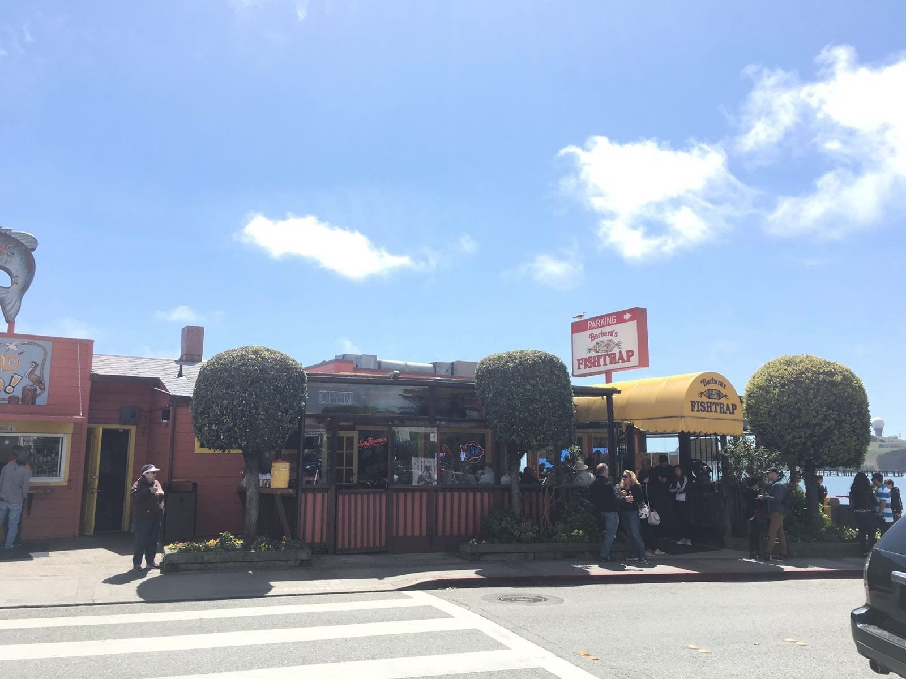
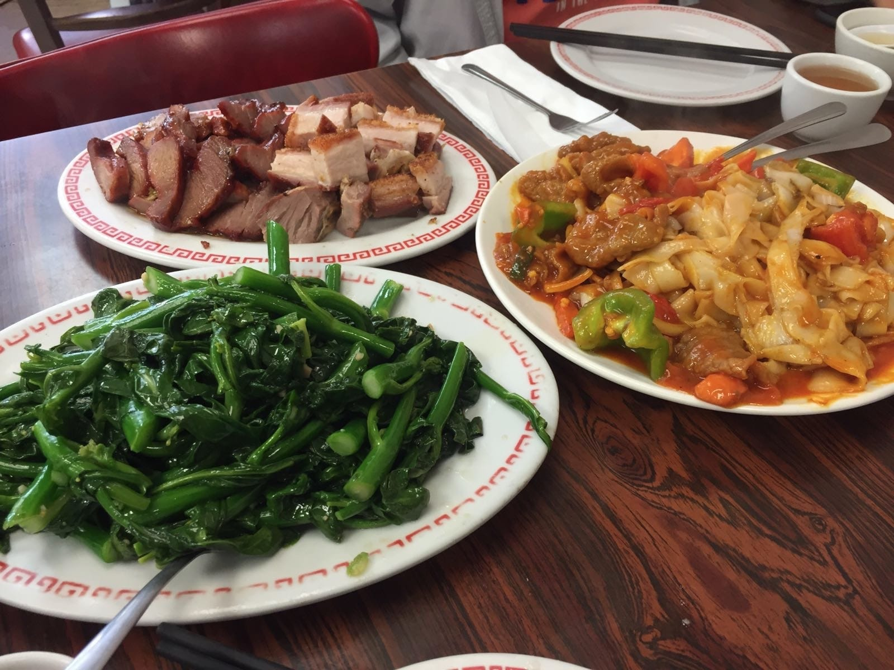

Sunday, 24 April 2016 at 6:04 PM
Weekly Log #4
UserTesting
For some reason, a string of my colleagues have been getting into accidents/injuries 🙁
I’ve started putting serious work into a desktop client I’m building for the company to use, based on the Electron framework.
Electron
This is a framework for people to build a desktop app using web technologies, written by GitHub. The underlying engine is powered by Chromium (the open-source backbone of Google Chrome), which packs a V8 Javascript (JS) engine. Notable apps written using Electron include the Slack OS X client, the Atom editor and Visual Studio Code. The framework brings in a few concepts which I’ll explain below.
Concepts
Main process
This main process is the thing Electron launches. It runs a JS file of your choice and you can use this to handle app events (such as closing, opening) and create windows (which is where you set up the render process(es), explained next).
Render process
Each window has a render process. They work on displaying a specified HTML web page in a window.
Webview element
Electron introduced this special element as a way to contain web pages in the render windows. It’s kind of like an iframe, but it lets you do extra things like injecting CSS, JS and specifying your user agent.
The whole point of the desktop client is to replace a series of Chrome extensions written by people in and outside of the company, all designed to add specific functionality to Trello, a Japanese kanban-like card management website. These extensions did not work very well, with some of them eating up large amounts of CPU and others messing up another extension’s functionality. For this desktop client, I would re-write the functionality in a way that they all worked well and in an efficient manner.
Initial writing of the client
Although the base is Chromium, there is no support for Google Chrome’s extensions API, which meant I had to re-write the functionality from scratch. It turned out to be a good thing, really - the code ends up being much cleaner.
setInterval - simple but inefficient
setInterval is a very direct way of executing injection code on the Trello webpage. It’s a really simple flow to have the code execute per every specified duration. However, it’s not good CPU-wise and the code would run even if the user was not doing anything on the page (i.e. the window left in the background, etc). A library called TrelloUI attempts to solve the issue by providing custom JS events but it uses setInterval internally. Eventually, I opted to use a MutationObserver, which can observe certain DOM elements and trigger code when the DOM changes. These should not trigger when the user is not interacting with the site, as there would not be changes on the DOM.
Re-writing the extensions’ functionality by hand
Some of the extensions’ functionality were pretty simple conceptually, and I wrote the functionality back up without referencing the extension’s original code. The more complicated ones required referencing, but almost no lines of code were directly lifted off onto the desktop client.
There’ll be more on the client in the coming weeks as I work on it 😄.
Saturday, Half Moon Bay
We went to Half Moon Bay on Saturday, by taking Caltrain to Hillside and biking the rest.
the beautiful (and windy!) Pacific Ocean
The coastline, with Highway 101 (I think)
the formula for decent photography: give it lots of headroom! 📷

Where we had lunch: Fish & Chips for me. I’m still not sure why the cashier added 2 bowls of Clam Chowder to my receipt (and charged me for it, of course 💸). Jurvis says it was good though, lol…
The trails on the mountain were quite rough after a while, and then it became seriously narrow, where it was too difficult for me to balance on my bike. Afterwards, we had to drag the bikes up an insanely steep slope, so we pretty much agreed that the trail wasn’t exactly designed for bikes.
Sunday
On Sunday, we just went out for lunch at San Bruno Ave.

Lunch @ Wing Hing Restaurant, with Ivan and Joshua. Garlic w/ Bai Cai, Char Siew, Roast Pork and Curry Tomato Beef Hor Fun. 👍